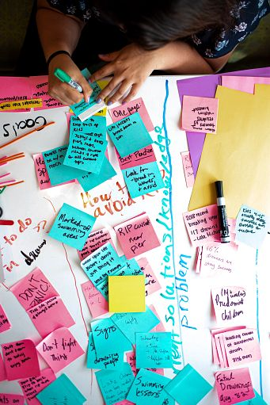

Starting and Staying Organized
When you're finding, applying, and interviewing for jobs, it can be hard to keep track of all the moving pieces. It's important to log your applications somewhere that works for you. It's hard to reorganize if you lose track, so commit to your system early and recommit yourself to its upkeep with every application.
Consistency is Key
Set goals for your applications. Maybe you want to apply to three jobs per week or have two coffee chats per month. Consider and set your goals ahead of time to make it easier to stick to them. Maybe team up with a friend to hold each other accountable.
Embrace Variety
Search for many different keywords and job titles; don't get too committed to a certain title too early. Companies use a variety of titles to imply very similar job descriptions, so take the risk of clicking on something that you might not be 100% sure about. It could be your next favorite job!
Job Search Sites
Getting Stuck?
Don't forget about the Career Development Office! We're here to help, so come meet with us if you have any questions or are unsure how to proceed. We'd love to help you get started, navigate you out of a tough spot, or celebrate the job offer of your dreams!